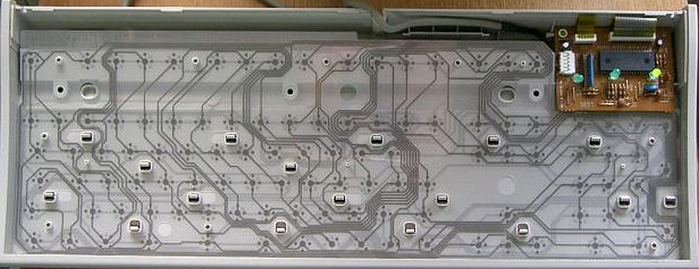
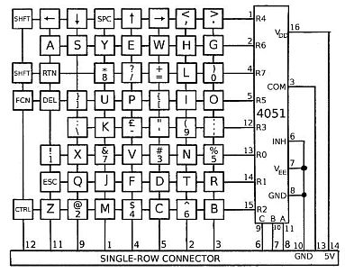
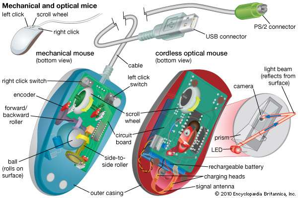
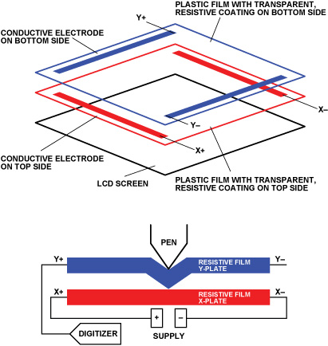
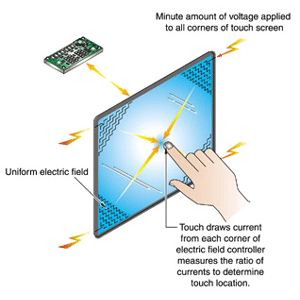

 
All keyboards today use a USB connection. Wireless keyboards use a USB transceiver. Even midi music keyboards use USB these days.
Old keyboards used to plug into either a DB-6 serial port, a 5-pin DIN "AT connector", or a 6-pin mini-DIN "PS/2" connector.
Key names
-
: = colon
; = semi colon
\ = backslash
/ = forwardslash
| = pipe (shift + \)
~ = tilde
[ ] = brackets
{} = curly brackets or braces
_ = underscore (shift + hyphen)
@ = ampersand
# = hash or pound
^ = karat
() = parenthesis
Mouse

It is called a mouse because it used to sort of resemble one, with the cord as the mouse's tail. Old mice used to use a ball at the bottom to roll around on. Now they use a laser and optic sensors or trackballs to determine movement, they are often wireless.
Other input devices like touch pads, touch screens and motion sensors compete with the mouse. But like all external devices, most mice use USB (some use blue tooth). They used to use a PS/2 or DB-9 serial port.
Touchpad / Trackpad

A touchpad is an input device that translates the motion of fingers on a surface into relative position of the cursor on the screen. The two most commonly used methods of touchpads are CONDUCTIVE and CAPACITIVE sensing.
In conductive sensing there are two layers of grids used. One layer has horizontal set of wires and the other layer has a vertical set of wires. There is a low conductivity material between the wire intersections so that electricity does not flow between the wires. When the touchpad is pressed at a point, the material gets thinner between the wires, allowing the flow of electricity. Then the coordinates of point of contact is determined.
Capacitive sensors detect anything which is conductive or has dielectric properties. Our body has the conductive properties, hence it works. This is not the case when you use a pencil. The capacitive sensitive touchpad has two parts; ground and sensor. When the finger is brought close to the touch pad, then capacitance of the system increases. From the position of capacitors which are charging and discharging at any point of time, the coordinates of point of touch is determined.
Touchscreen

Resistive touch screens are the most basic and common touch screens, the ones used at ATMs and supermarkets, that require an electronic signature with that small grey pen. These screens literally “resist” your touch; if you press hard enough you can feel the screen bend slightly. This is what makes resistive screens work – two electrically conductive layers bending to touch one another.

Capacitive touch screens work with anything that holds an electrical charge including human skin. They are constructed from materials like copper or indium tin oxide that store electrical charges in an electrostatic grid of tiny wires, each smaller than a human hair.